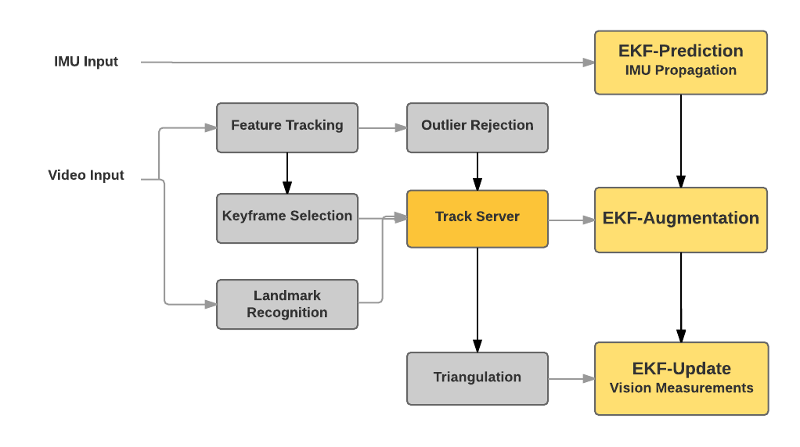

Major Components of VIN
VIN uses an Extended Kalman Filter (EKF) framework to do the state estimation. As part of this framework, VIN tracks natural features (Feature Tracking box) in the environment across multiple camera frames while removing outlying features (Outlier Rejection box) that do not satisfy certain conditions. The feature correspondences are used to compute the 3D positions of each feature (Triangulation box) which serve to constrain the relative camera (or IMU) poses across multiple frames through minimization of the reprojection error (EKF-Update box). IMU data is used to further constrain the camera poses by predicting the expected camera pose from one frame to the next (EKF-Prediction box). Other major components of the VIN include detecting and tracking landmarks in the world (Landmark Recognition box); selecting distinctive camera frames (Keyframe Selection box); and augmentation of the EKF state (EKF-Augmentation box). 
Early Demo of VIN working in DAQRI's office
It is working after months & years of hardworking teams including software engineers, algorighthm developpers, FPGA engineers, electrical engineers, mechanical engineers, and calibration engineers.
Talk given at Embedded Vision Alliance Meeting
This is a presentation I gave at an Embedded Vision Alliance meeting on real-time VIN and why it enables AR for industrial applications DAQRI was tryig to build.